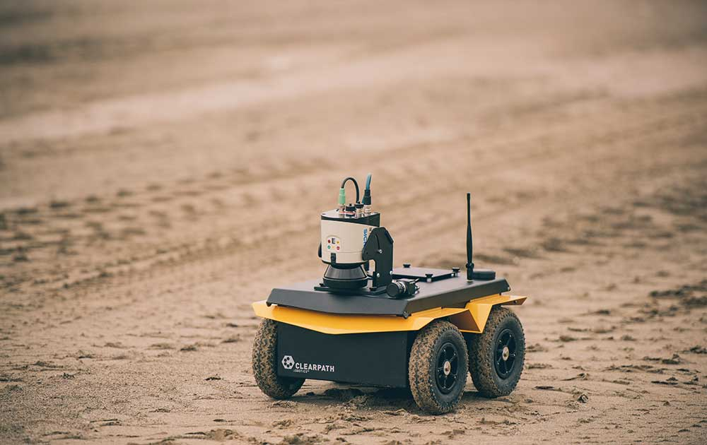
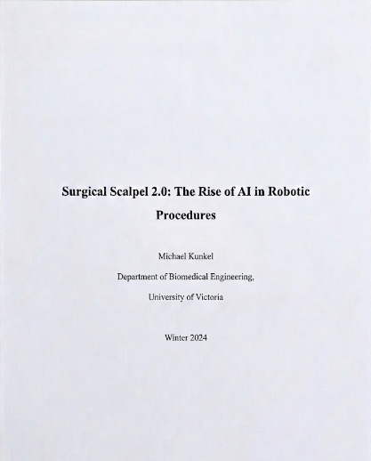
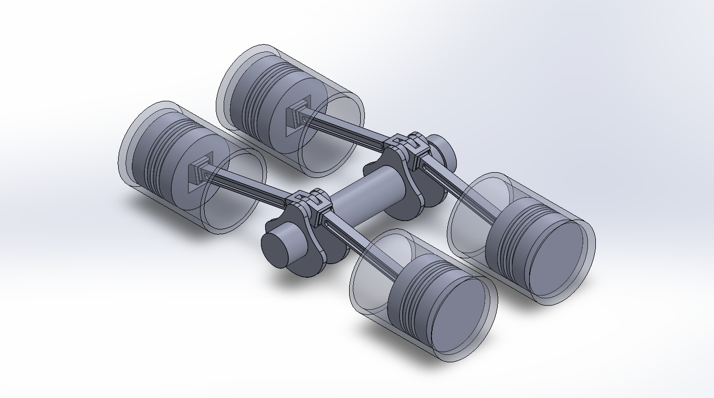

What I've been working on
Automation of UGV Clearpath Jackal
Operating within the ACIS Lab, a research facility dedicated to AI, automation, and autonomous systems, I develop the core software automation for the Clearpath Jackal robot using ROS and Bash scripting.

- Developed and validated autonomous point-to-point navigation logic for the Clearpath Jackal in a simulated environment by utilizing ROS, Bash scripting, and simulated LiDAR data, successfully proving reliable, collision-free path planning before physical deployment.
- Engineered remote testing pipelines by writing custom Bash scripts executed via SSH to launch ROS simulation nodes, streamlining the evaluation of autonomous mapping and obstacle avoidance algorithms.
- Gained hands-on experience with ROS and robotic simulation tools, enhancing my technical skill set in robotics and automation, which are crucial for my future career in biomedical engineering.
- Demonstrated strong communication and project management skills within a structured research setting by effectively dividing workloads with a teammate and presenting regular status updates to the lab manager, ensuring the timely completion of project milestones.
AI In Robotic Surgery
- Investigated the potential of AI to transform robotic surgery by analyzing real-world applications, identifying limitations, and proposing solutions to improve precision and patient outcomes.
- Evaluated risks, benefits, and ethical considerations of AI in surgery through global case studies, developing evidence-based arguments supported by professional sources.
- Strengthened research skills by locating credible sources, analyzing technical information, and organizing findings into a structured paper addressing real-world healthcare challenges.

SolidWorks Design Lab

- Created parametric 3D models and assemblies using SolidWorks through weekly design labs and assignments, gaining strong spatial visualization and CAD design skills.
- Produced professional mechanical drawings and dimensioned parts through application of CAD standards and geometric dimensioning & tolerancing (GD&T), gaining precision drafting and documentation skills.
- Applied mechanical design principles through iterative modelling and manufacturability analysis, designing custom support fixtures/components to support simulated jig development and manufacturing processes.
Smart Hygiene Sensor System
This project involved designing and prototyping a real-time, sensor-based monitoring station to evaluate handwashing compliance and track hygiene trends in healthcare environments. By integrating electrical hardware and mechanical sensors using MicroPython, the system effectively captures data and displays it on a custom, responsive web interface. The end-to-end development process relied on a systems engineering approach, front-end coding, and close team collaboration to ensure the hardware and software functioned seamlessly together.